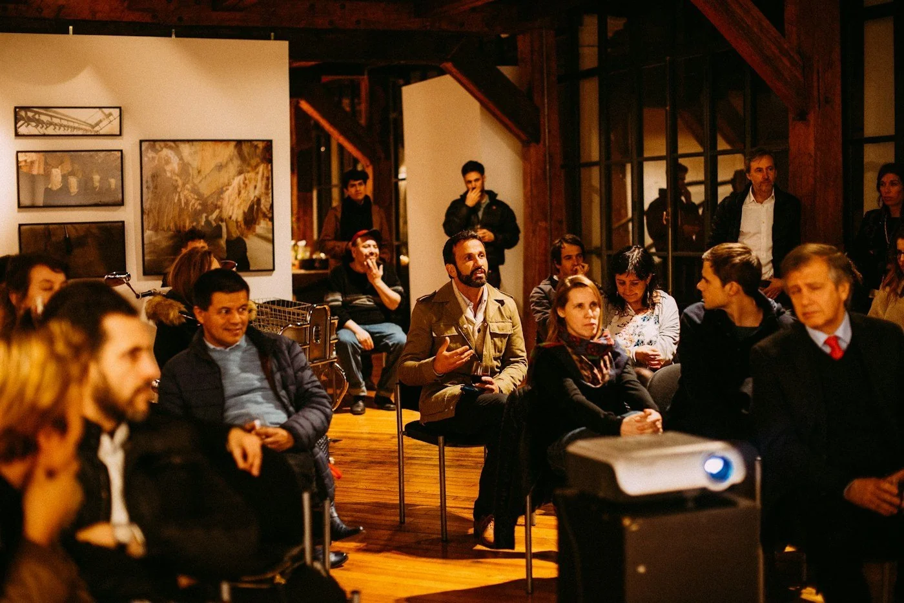
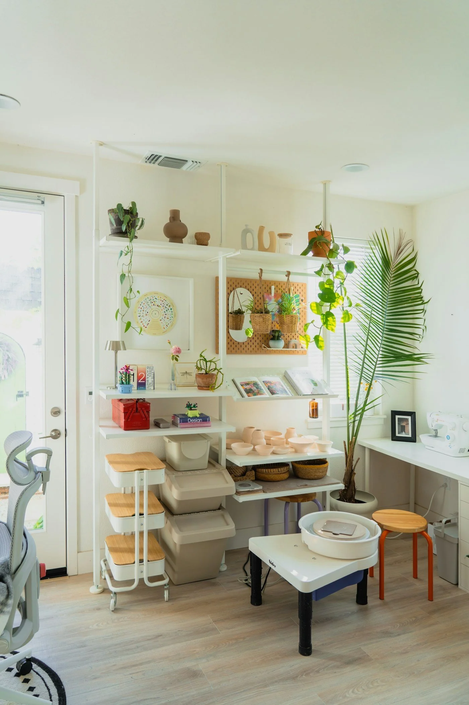

Выставки
Город в линиях
Графика молодых художников о ритме и характере большого города.
11:00–20:00Бесплатно
Посмотреть событие ↗
Культурный центр в сердце города
Выставки, концерты, мастер-классы и люди, с которыми хочется создавать новое.

Афиша
Графика молодых художников о ритме и характере большого города.
Камерный концерт квартета с авторской программой.
Создаём керамическую чашу и учимся чувствовать материал.
Направления
Каждый день здесь происходит что-то, что помогает увидеть привычное по-новому.

650 м² для творчестваО центре
Мы создали открытое место, где встречаются художники, музыканты, соседи и просто любопытные люди.
Здесь не нужно быть экспертом. Достаточно интереса, чтобы смотреть, слушать, задавать вопросы и создавать.
Наши студии ↗Почему мы
7 минут пешком от метро и удобный вход.
Программы для детей, взрослых и всей семьи.
Знакомства, коллаборации и обмен идеями.
Много бесплатных форматов каждую неделю.
Просто
Посмотрите программу и найдите то, что откликается.
Укажите контакты — это займёт меньше минуты.
Мы напомним о событии и будем ждать вас.
Новый опыт ближе, чем кажется
Выберите событие и станьте частью творческого города.
Перейти к афише ↗